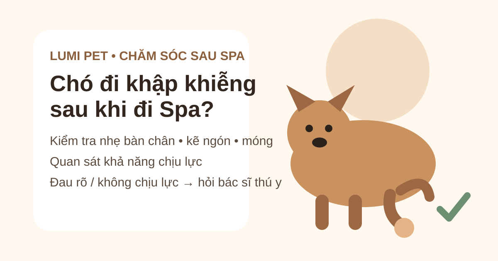

Chó khập khiễng sau khi đi Spa: kiểm tra gì trước?
Trả lời nhanh: nếu chó bắt đầu đi khập khiễng sau khi đi Spa, hãy cho bé nghỉ, quan sát chân nào đang giảm chịu lực và kiểm tra nhẹ phần bàn chân, kẽ ngón, đệm chân và móng nếu bé cho phép. Đừng mặc định Spa là nguyên nhân: khập khiễng có thể liên quan dị vật, móng tổn thương, vết đau ở bàn chân, cơ–khớp hoặc vấn đề đã có từ trước. Nếu bé không chịu đặt chân xuống, đau rõ, sưng, chảy máu, không thể đứng/đi bình thường hoặc tình trạng không giảm nhanh, nên liên hệ bác sĩ thú y.

Đầu tiên: chó còn chịu lực lên chân không?
Hãy nhìn bé đi vài bước trên mặt phẳng an toàn thay vì bắt chạy thử. Ghi nhận chân trước hay sau, trái hay phải; bé chỉ bước ngắn hơn, nhón chân hay hoàn toàn không đặt chân xuống. Một video ngắn từ phía sau và bên hông có thể giúp bác sĩ thú y hiểu kiểu đi bất thường nếu cần khám.
Nếu chó đau nhiều, phản ứng khi chạm hoặc không muốn đứng, đừng cố kiểm tra sâu. Việc nắn một chân đang có tổn thương xương, khớp hoặc mô mềm có thể làm bé đau thêm.
Checklist 5 điểm có thể kiểm tra nhẹ tại nhà
1. Đệm bàn chân
Nhìn xem có vết cắt, trầy, đỏ, sưng, bỏng, nứt hoặc vật lạ bám trên đệm chân không. Bàn chân đau là một trong nhiều nguyên nhân có thể làm chó đổi dáng đi.
2. Kẽ ngón chân
Tách lông thật nhẹ nếu bé hợp tác. Kiểm tra kẽ ngón có dị vật, vùng đỏ, sưng hoặc ẩm bất thường. Nếu vật lạ cắm sâu, không cố đào hoặc kéo mạnh tại nhà.
3. Móng và huyền đề
Quan sát móng có nứt, gãy, chảy máu hay lệch bất thường không. Phần sống của móng có mạch máu và thần kinh; tổn thương ở đây có thể đau và làm chó tránh chịu lực.
4. Sưng và nhiệt bất thường
So sánh hai chân nhưng không bóp mạnh. Nếu một vùng sưng rõ, rất đau hoặc chó phản ứng mạnh khi chạm, dừng kiểm tra và liên hệ bác sĩ thú y.
5. Hành vi liếm chân
Liếm một bàn chân liên tục có thể là dấu hiệu khó chịu hoặc đau. Nếu biểu hiện chính là liếm, xem thêm bài chó liếm chân sau khi đi Spa để kiểm tra kỹ vùng móng, kẽ ngón và đệm chân.
Vì sao chó có thể đi khập khiễng?
Khập khiễng là một dấu hiệu chứ không phải một chẩn đoán. Các khả năng trải từ vấn đề nhỏ ở bàn chân đến bệnh cơ-xương-khớp cần khám. Thời điểm xuất hiện sau grooming chỉ cho biết trình tự thời gian, không chứng minh nguyên nhân.
Dị vật hoặc tổn thương bàn chân
Mảnh nhỏ mắc ở bàn chân, vết cắt, kích ứng hoặc tổn thương đệm chân có thể khiến bé bước né. Hãy kiểm tra bằng mắt và dừng nếu phải đào sâu mới lấy được dị vật.
Móng bị đau hoặc tổn thương
Móng nứt, gãy hoặc phần sống bị tổn thương có thể gây đau. Nếu có chảy máu không kiểm soát được hoặc móng tổn thương rõ, nên hỏi bác sĩ thú y. Nếu bé vốn rất sợ thao tác ở chân, xem thêm chó sợ cắt móng khi grooming.
Căng cơ, khớp hoặc vấn đề có từ trước
Đau cơ, bong gân, bệnh khớp hoặc các vấn đề chỉnh hình cũng có thể gây khập khiễng. Vì vậy, nếu bàn chân nhìn bình thường nhưng dáng đi vẫn bất thường, đừng tiếp tục suy đoán từ việc vừa đi Spa.
Nên làm gì trong lúc theo dõi?
Cho bé nghỉ và hạn chế chạy nhảy
Giữ hoạt động ở mức tối thiểu trong lúc đánh giá. Tránh cầu thang, nhảy lên xuống ghế hoặc chơi vận động mạnh nếu bé đang đi lệch.
Chụp ảnh, quay video và ghi thời điểm
Ghi lúc phát hiện, chân bị ảnh hưởng, bé có vừa ngủ dậy hay vận động không, mức chịu lực thay đổi ra sao. Nếu vừa grooming, có thể hỏi cơ sở xem đã thực hiện những bước nào ở chân/móng để cung cấp lịch sử đầy đủ cho bác sĩ; đây không phải là kết luận nguyên nhân.
Không tự dùng thuốc giảm đau của người
Một số thuốc dùng cho người có thể gây hại cho chó. Chỉ dùng thuốc khi bác sĩ thú y đã chỉ định cho chính tình trạng hiện tại.
Khi nào cần đưa chó đi thú y?
Nên liên hệ bác sĩ thú y nếu khập khiễng cấp tính không giảm nhanh, bé đi ba chân hoặc đau nhưng vẫn còn tự đứng/đi được. Cần đánh giá khẩn cấp hơn nếu chó không thể đứng hoặc đi nếu không được hỗ trợ, có biến dạng/nghi gãy xương, chấn thương lớn, đau dữ dội, chảy máu đáng kể, sưng tăng nhanh hoặc vết thương sâu.
Nếu chỉ hơi bước lệch thoáng qua rồi trở lại hoàn toàn bình thường, có thể tiếp tục quan sát. Nhưng nếu tái diễn, kéo dài hoặc nặng lên, khám thú y sẽ an toàn hơn việc chờ đoán nguyên nhân.
Chuẩn bị gì cho lần Spa sau?
Nếu bé từng có vấn đề chân, móng, khớp hoặc rất nhạy khi chạm chân, hãy báo trước khi đặt lịch Spa. Bạn có thể xem dịch vụ Spa thú cưng Bình Thạnh, Grooming chó mèo và checklist trước khi đặt lịch để bàn giao thông tin rõ hơn.
Câu hỏi thường gặp
Chó khập khiễng sau Spa có phải do cắt móng quá ngắn?
Không thể kết luận nếu chưa kiểm tra. Móng bị tổn thương có thể gây đau, nhưng khập khiễng còn có nhiều nguyên nhân khác. Hãy nhìn móng và bàn chân nhẹ nhàng; nếu đau rõ, chảy máu hoặc không chịu lực, liên hệ bác sĩ thú y.
Có nên xoa bóp chân cho chó không?
Không nên massage hoặc nắn mạnh khi chưa biết nguyên nhân. Với chân đau rõ hoặc nghi chấn thương, hạn chế vận động và để bác sĩ đánh giá.
Khập khiễng nhưng không thấy vết thương thì sao?
Không thấy tổn thương ngoài da không loại trừ đau cơ, khớp, dây chằng hoặc vấn đề khác. Nếu dáng đi bất thường kéo dài, tái diễn hoặc bé đau, nên khám.
Cần đặt lịch Spa/Grooming cho bé?
Hãy báo trước các vấn đề về chân, móng, khớp hoặc phản ứng khi chạm chân để đội ngũ có thông tin trước buổi chăm sóc.